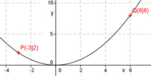

Aufgabe 24 Eine Parabel der Form y = ax2 geht durch den Punkt (0|0). Liegen die Punkte P(-3|2) und Q(6|8) auf dieser Parabel? Zur Ermittlung der Funktionsgleichung muss man davon ausgehen, dass P oder Q auf der Parabel liegt. Angenommen, P liegt auf der Parabel: Punkt (-3|2) bedeutet, x = -3 und y = 2. In y = ax2 eingesetzt: 2 = a * (-3)2 2 = 9a |:9 2 a = --- 9 2 y = --- x2 9 Liegt Q auf der Parabel? Punkt (6|8) bedeutet, x = 6 und y = 8. 2 In y = --- x2 eingesetzt: 9 2 8 = --- * (6)² 9 2 8 = --- * 36 9 8 = 8 Wahre Aussage, somit liegt Q auf der Parabel. 